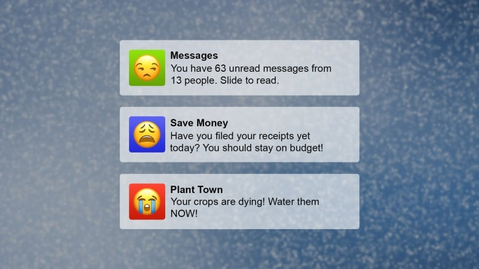

Notifications stress me out. How I cut them down to improve my well-being (CBC Radio)

(Jason Vermes)
I’m really fed up with notifications.
When it’s not the group chat blowing up, it’s a breaking news alert. When it’s not a reminder to meet your step goal, your budget app is letting you know you’ve spent too much at Starbucks this week.
Now, before you say anything, I know. I can just turn them off.
But I want certain notifications to get through. Texts from my Mom, for example. Maybe when I get a friend request on Facebook. An alert that my package was signed by an unknown neighbour.
The thing is, when you have almost 70 apps on each of your devices (I should deal with that too), the thought of customizing all these different bleeps and bloops is almost overwhelming.
What’s worse is that I’m a tech lover… so I don’t want to give up all my cool gadgets. That’s why when I discovered my newfound place of solace, I couldn’t have been happier.

(Timothy A. Clary/AFP/Getty Images)
When I bought the Nintendo Switch, all I wanted to do was save princesses and race go-karts. But it gave me a greater joy than I ever could’ve imagined: no notifications.
For once, I can fully dive into a story without the incessant vibration of something needing my attention 一 other than Mario who is close to a cliff.
Having the chance to focus solely on the game is such a relief compared to how I feel using my phone.
Elizabeth Dunn is a professor of psychology at University of British Columbia. (UBC Psychology)
“Notifications seem to increase our feelings of distraction,” says Elizabeth Dunn.
Elizabeth is a researcher at the University of British Columbia. She has studied the impact that notifications have on our well-being.
“When we’re constantly being buzzed by our phones and reminded of this Facebook update and that incoming message… it makes it hard for us to focus.”
Naturally that distraction keeps us from being fully present in what we’re doing and who we’re with. It might also have consequences for our mood.
“That bit of distraction does seem to kind of chip away at our good feelings and make us feel, perhaps, a little bit more anxious on a day to day basis,” says Elizabeth.
I admit, over the past six months, my relationship to notifications has changed. Often, I ignore them, deleting them from my home screen sometime late at night without reading them. Other times, I’ll feel the buzz or hear the chirp of a message and choose to ignore it.
Joshua Mauldin is a designer based in Charlotte, North Carolina. (Enowen Photography)
“It’s a lot like when someone at work comes up to your desk and asks you, ‘Hey! Did you see that email that I sent you?’,” says Josh Mauldin, an app designer.
“The more often that happens, the more we’re going to start ignoring that person or moving our desk.”
As a designer, Josh helps companies design their notifications in a way that benefits 一 and doesn’t annoy 一 users.
Aside from what I call the “need-to-know” notifications like message alerts, many apps notify you because they want you to use it. Think of your farming simulator reminding you to water your virtual plants or social networks letting you know a brand you follow just posted for the first time in two weeks.
“Companies really want more engagement,” Josh says.
“Monthly active users are a benchmark of how a lot of apps are rated and if you’re constantly sending someone a notification and they’re interacting with your app, that helps your metrics.”
The higher those metrics, the stronger the bottom line.
So, is the solution for everyone to buy a Nintendo Switch? No, of course not.
Josh finds peace in his Kindle: “It’s just a book. It doesn’t talk back to me. I can just go and read without interruptions.”
Elizabeth employs the help of others: “I actually had my husband change my password on my Facebook account so that I couldn’t access it and I found it was actually making me happier.”
Related
- Notification vacation
- Mobile mindfulness can bring calm to your hectic life
- ‘Sleep is good. F**k companies that endorse skipping it as some kind of superpower.’
And me? Besides spending more time than I should with my Switch lately, I carved out some time in a busy week to limit my notifications.
Alerts that people liked my photo on Instagram? Gone. The little bubble that tells me how many emails I haven’t read? No more.
“I think it really comes down to prioritizing the encounters with technology that are actually making us happy,” says Elizabeth.
“In our research, we put people into this experiment and tell people to turn off their notifications for a week… I would encourage people to try that experiment on themselves.”
So here’s some homework: in 2018, think about what you really need to know from you phone and curb the rest.
Those seconds spent diverting your attention to your phone are much better spent doing anything else.